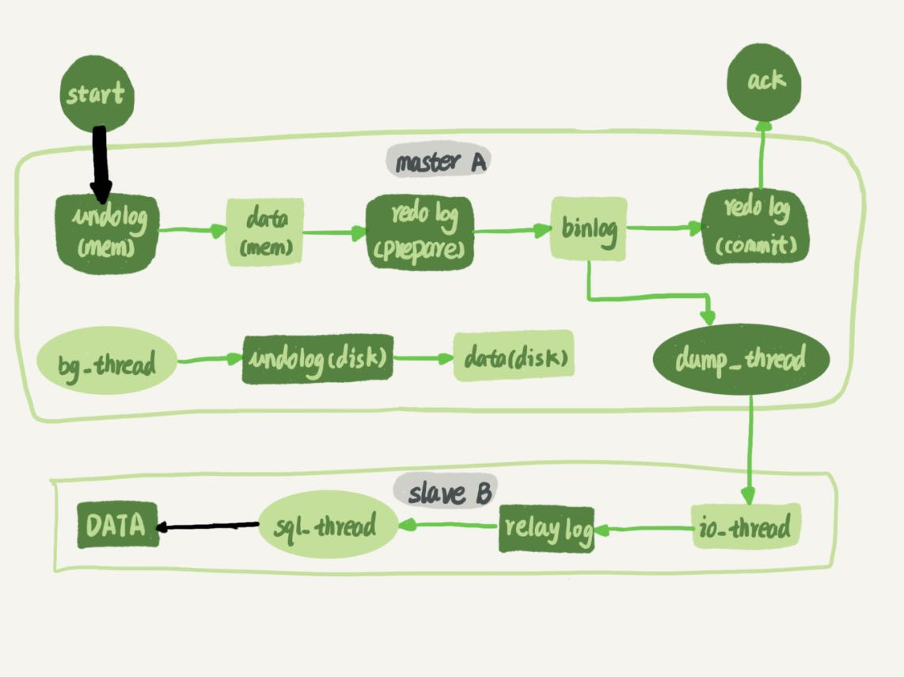
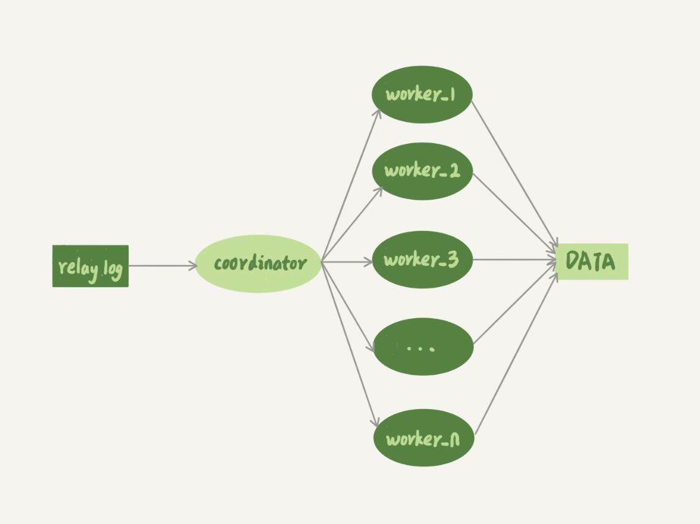
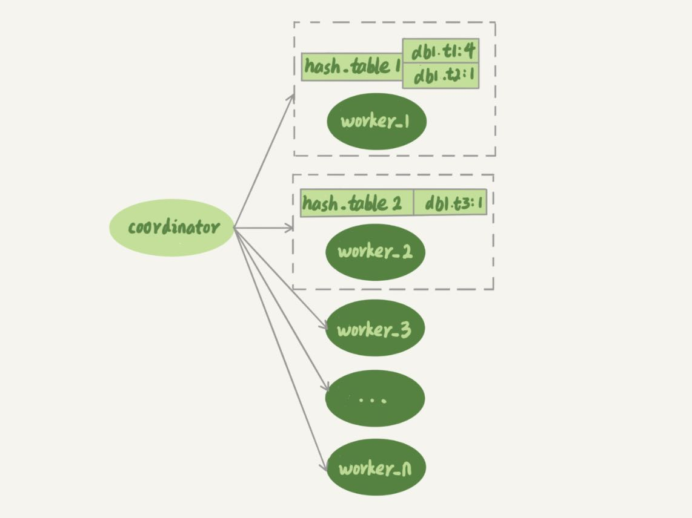
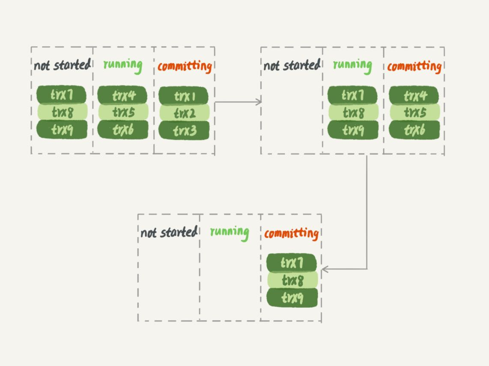
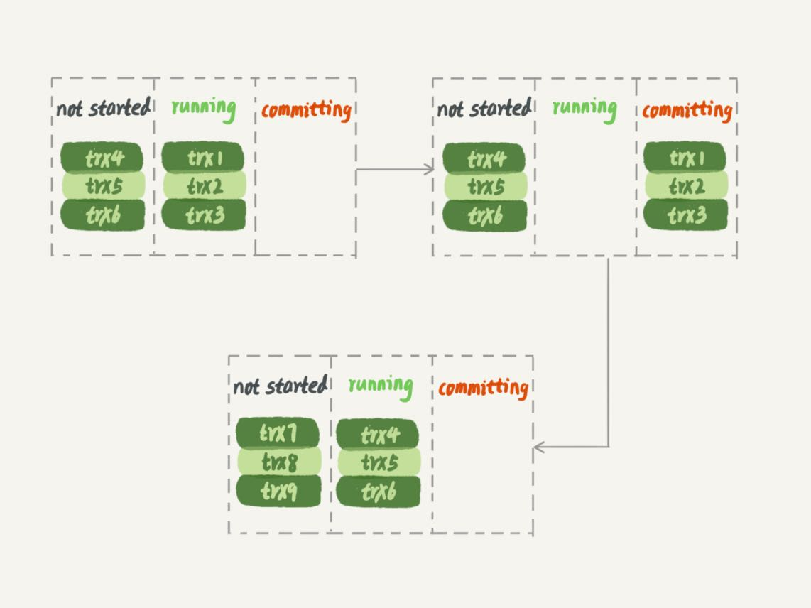
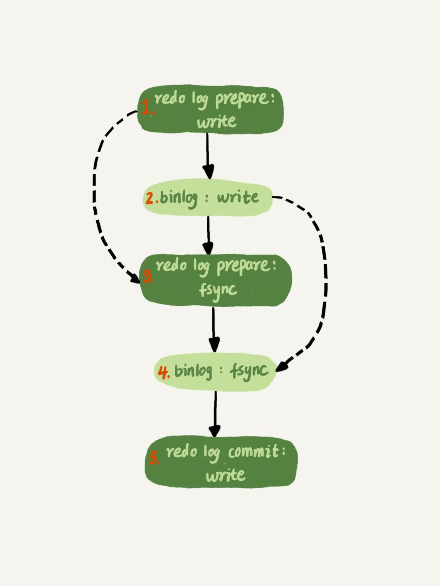

在上一篇文章中，我和你介绍了几种可能导致备库延迟的原因。你会发现，这些场景里，不论是偶发性的查询压力，还是备份，对备库延迟的影响一般是分钟级的，而且在备库恢复正常以后都能够追上来。
但是，如果备库执行日志的速度持续低于主库生成日志的速度，那这个延迟就有可能成了小时级别。而且对于一个压力持续比较高的主库来说，备库很可能永远都追不上主库的节奏。
这就涉及到今天我要给你介绍的话题：备库并行复制能力。

谈到主备的并行复制能力，我们要关注的是图中黑色的两个箭头。一个箭头代表了客户端写入主库，另一箭头代表的是备库上sql_thread执行中转日志（relay log）。如果用箭头的粗细来代表并行度的话，那么真实情况就如图1所示，第一个箭头要明显粗于第二个箭头。
在主库上，影响并发度的原因就是各种锁了。由于InnoDB引擎支持行锁，除了所有并发事务都在更新同一行（热点行）这种极端场景外，它对业务并发度的支持还是很友好的。所以，你在性能测试的时候会发现，并发压测线程32就比单线程时，总体吞吐量高。
而日志在备库上的执行，就是图中备库上sql_thread更新数据(DATA)的逻辑。如果是用单线程的话，就会导致备库应用日志不够快，造成主备延迟。
在官方的5.6版本之前，MySQL只支持单线程复制，由此在主库并发高、TPS高时就会出现严重的主备延迟问题。
从单线程复制到最新版本的多线程复制，中间的演化经历了好几个版本。接下来，我就跟你说说MySQL多线程复制的演进过程。
其实说到底，所有的多线程复制机制，都是要把图1中只有一个线程的sql_thread，拆成多个线程，也就是都符合下面的这个模型：

图2中，coordinator就是原来的sql_thread, 不过现在它不再直接更新数据了，只负责读取中转日志和分发事务。真正更新日志的，变成了worker线程。而work线程的个数，就是由参数slave_parallel_workers决定的。根据我的经验，把这个值设置为8~16之间最好（32核物理机的情况），毕竟备库还有可能要提供读查询，不能把CPU都吃光了。
接下来，你需要先思考一个问题：事务能不能按照轮询的方式分发给各个worker，也就是第一个事务分给worker_1，第二个事务发给worker_2呢？
其实是不行的。因为，事务被分发给worker以后，不同的worker就独立执行了。但是，由于CPU的调度策略，很可能第二个事务最终比第一个事务先执行。而如果这时候刚好这两个事务更新的是同一行，也就意味着，同一行上的两个事务，在主库和备库上的执行顺序相反，会导致主备不一致的问题。
接下来，请你再设想一下另外一个问题：同一个事务的多个更新语句，能不能分给不同的worker来执行呢？
答案是，也不行。举个例子，一个事务更新了表t1和表t2中的各一行，如果这两条更新语句被分到不同worker的话，虽然最终的结果是主备一致的，但如果表t1执行完成的瞬间，备库上有一个查询，就会看到这个事务“更新了一半的结果”，破坏了事务逻辑的隔离性。
所以，coordinator在分发的时候，需要满足以下这两个基本要求：
- 不能造成更新覆盖。这就要求更新同一行的两个事务，必须被分发到同一个worker中。
- 同一个事务不能被拆开，必须放到同一个worker中。
各个版本的多线程复制，都遵循了这两条基本原则。接下来，我们就看看各个版本的并行复制策略。
MySQL 5.5版本的并行复制策略
官方MySQL 5.5版本是不支持并行复制的。但是，在2012年的时候，我自己服务的业务出现了严重的主备延迟，原因就是备库只有单线程复制。然后，我就先后写了两个版本的并行策略。
这里，我给你介绍一下这两个版本的并行策略，即按表分发策略和按行分发策略，以帮助你理解MySQL官方版本并行复制策略的迭代。
按表分发策略
按表分发事务的基本思路是，如果两个事务更新不同的表，它们就可以并行。因为数据是存储在表里的，所以按表分发，可以保证两个worker不会更新同一行。
当然，如果有跨表的事务，还是要把两张表放在一起考虑的。如图3所示，就是按表分发的规则。

可以看到，每个worker线程对应一个hash表，用于保存当前正在这个worker的“执行队列”里的事务所涉及的表。hash表的key是“库名.表名”，value是一个数字，表示队列中有多少个事务修改这个表。
在有事务分配给worker时，事务里面涉及的表会被加到对应的hash表中。worker执行完成后，这个表会被从hash表中去掉。
图3中，hash_table_1表示，现在worker_1的“待执行事务队列”里，有4个事务涉及到db1.t1表，有1个事务涉及到db2.t2表；hash_table_2表示，现在worker_2中有一个事务会更新到表t3的数据。
假设在图中的情况下，coordinator从中转日志中读入一个新事务T，这个事务修改的行涉及到表t1和t3。
现在我们用事务T的分配流程，来看一下分配规则。
- 由于事务T中涉及修改表t1，而worker_1队列中有事务在修改表t1，事务T和队列中的某个事务要修改同一个表的数据，这种情况我们说事务T和worker_1是冲突的。
- 按照这个逻辑，顺序判断事务T和每个worker队列的冲突关系，会发现事务T跟worker_2也冲突。
- 事务T跟多于一个worker冲突，coordinator线程就进入等待。
- 每个worker继续执行，同时修改hash_table。假设hash_table_2里面涉及到修改表t3的事务先执行完成，就会从hash_table_2中把db1.t3这一项去掉。
- 这样coordinator会发现跟事务T冲突的worker只有worker_1了，因此就把它分配给worker_1。
- coordinator继续读下一个中转日志，继续分配事务。
也就是说，每个事务在分发的时候，跟所有worker的冲突关系包括以下三种情况：
- 如果跟所有worker都不冲突，coordinator线程就会把这个事务分配给最空闲的woker;
- 如果跟多于一个worker冲突，coordinator线程就进入等待状态，直到和这个事务存在冲突关系的worker只剩下1个；
- 如果只跟一个worker冲突，coordinator线程就会把这个事务分配给这个存在冲突关系的worker。
这个按表分发的方案，在多个表负载均匀的场景里应用效果很好。但是，如果碰到热点表，比如所有的更新事务都会涉及到某一个表的时候，所有事务都会被分配到同一个worker中，就变成单线程复制了。
按行分发策略
要解决热点表的并行复制问题，就需要一个按行并行复制的方案。按行复制的核心思路是：如果两个事务没有更新相同的行，它们在备库上可以并行执行。显然，这个模式要求binlog格式必须是row。
这时候，我们判断一个事务T和worker是否冲突，用的就规则就不是“修改同一个表”，而是“修改同一行”。
按行复制和按表复制的数据结构差不多，也是为每个worker，分配一个hash表。只是要实现按行分发，这时候的key，就必须是“库名+表名+唯一键的值”。
但是，这个“唯一键”只有主键id还是不够的，我们还需要考虑下面这种场景，表t1中除了主键，还有唯一索引a：
CREATE TABLE `t1` (
`id` int(11) NOT NULL,
`a` int(11) DEFAULT NULL,
`b` int(11) DEFAULT NULL,
PRIMARY KEY (`id`),
UNIQUE KEY `a` (`a`)
) ENGINE=InnoDB;
insert into t1 values(1,1,1),(2,2,2),(3,3,3),(4,4,4),(5,5,5);
假设，接下来我们要在主库执行这两个事务：

可以看到，这两个事务要更新的行的主键值不同，但是如果它们被分到不同的worker，就有可能session B的语句先执行。这时候id=1的行的a的值还是1，就会报唯一键冲突。
因此，基于行的策略，事务hash表中还需要考虑唯一键，即key应该是“库名+表名+索引a的名字+a的值”。
比如，在上面这个例子中，我要在表t1上执行update t1 set a=1 where id=2语句，在binlog里面记录了整行的数据修改前各个字段的值，和修改后各个字段的值。
因此，coordinator在解析这个语句的binlog的时候，这个事务的hash表就有三个项:
- key=hash_func(db1+t1+“PRIMARY”+2), value=2; 这里value=2是因为修改前后的行id值不变，出现了两次。
- key=hash_func(db1+t1+“a”+2), value=1，表示会影响到这个表a=2的行。
- key=hash_func(db1+t1+“a”+1), value=1，表示会影响到这个表a=1的行。
可见，相比于按表并行分发策略，按行并行策略在决定线程分发的时候，需要消耗更多的计算资源。你可能也发现了，这两个方案其实都有一些约束条件：
- 要能够从binlog里面解析出表名、主键值和唯一索引的值。也就是说，主库的binlog格式必须是row；
- 表必须有主键；
- 不能有外键。表上如果有外键，级联更新的行不会记录在binlog中，这样冲突检测就不准确。
但，好在这三条约束规则，本来就是DBA之前要求业务开发人员必须遵守的线上使用规范，所以这两个并行复制策略在应用上也没有碰到什么麻烦。
对比按表分发和按行分发这两个方案的话，按行分发策略的并行度更高。不过，如果是要操作很多行的大事务的话，按行分发的策略有两个问题：
- 耗费内存。比如一个语句要删除100万行数据，这时候hash表就要记录100万个项。
- 耗费CPU。解析binlog，然后计算hash值，对于大事务，这个成本还是很高的。
所以，我在实现这个策略的时候会设置一个阈值，单个事务如果超过设置的行数阈值（比如，如果单个事务更新的行数超过10万行），就暂时退化为单线程模式，退化过程的逻辑大概是这样的：
- coordinator暂时先hold住这个事务；
- 等待所有worker都执行完成，变成空队列；
- coordinator直接执行这个事务；
- 恢复并行模式。
读到这里，你可能会感到奇怪，这两个策略又没有被合到官方，我为什么要介绍这么详细呢？其实，介绍这两个策略的目的是抛砖引玉，方便你理解后面要介绍的社区版本策略。
MySQL 5.6版本的并行复制策略
官方MySQL5.6版本，支持了并行复制，只是支持的粒度是按库并行。理解了上面介绍的按表分发策略和按行分发策略，你就理解了，用于决定分发策略的hash表里，key就是数据库名。
这个策略的并行效果，取决于压力模型。如果在主库上有多个DB，并且各个DB的压力均衡，使用这个策略的效果会很好。
相比于按表和按行分发，这个策略有两个优势：
- 构造hash值的时候很快，只需要库名；而且一个实例上DB数也不会很多，不会出现需要构造100万个项这种情况。
- 不要求binlog的格式。因为statement格式的binlog也可以很容易拿到库名。
但是，如果你的主库上的表都放在同一个DB里面，这个策略就没有效果了；或者如果不同DB的热点不同，比如一个是业务逻辑库，一个是系统配置库，那也起不到并行的效果。
理论上你可以创建不同的DB，把相同热度的表均匀分到这些不同的DB中，强行使用这个策略。不过据我所知，由于需要特地移动数据，这个策略用得并不多。
MariaDB的并行复制策略
- 能够在同一组里提交的事务，一定不会修改同一行；
- 主库上可以并行执行的事务，备库上也一定是可以并行执行的。
在实现上，MariaDB是这么做的：
- 在一组里面一起提交的事务，有一个相同的commit_id，下一组就是commit_id+1；
- commit_id直接写到binlog里面；
- 传到备库应用的时候，相同commit_id的事务分发到多个worker执行；
- 这一组全部执行完成后，coordinator再去取下一批。
当时，这个策略出来的时候是相当惊艳的。因为，之前业界的思路都是在“分析binlog，并拆分到worker”上。而MariaDB的这个策略，目标是“模拟主库的并行模式”。
但是，这个策略有一个问题，它并没有实现“真正的模拟主库并发度”这个目标。在主库上，一组事务在commit的时候，下一组事务是同时处于“执行中”状态的。
如图5所示，假设了三组事务在主库的执行情况，你可以看到在trx1、trx2和trx3提交的时候，trx4、trx5和trx6是在执行的。这样，在第一组事务提交完成的时候，下一组事务很快就会进入commit状态。

而按照MariaDB的并行复制策略，备库上的执行效果如图6所示。

可以看到，在备库上执行的时候，要等第一组事务完全执行完成后，第二组事务才能开始执行，这样系统的吞吐量就不够。
另外，这个方案很容易被大事务拖后腿。假设trx2是一个超大事务，那么在备库应用的时候，trx1和trx3执行完成后，就只能等trx2完全执行完成，下一组才能开始执行。这段时间，只有一个worker线程在工作，是对资源的浪费。
不过即使如此，这个策略仍然是一个很漂亮的创新。因为，它对原系统的改造非常少，实现也很优雅。
MySQL 5.7的并行复制策略
在MariaDB并行复制实现之后，官方的MySQL5.7版本也提供了类似的功能，由参数slave-parallel-type来控制并行复制策略：
- 配置为DATABASE，表示使用MySQL 5.6版本的按库并行策略；
- 配置为 LOGICAL_CLOCK，表示的就是类似MariaDB的策略。不过，MySQL 5.7这个策略，针对并行度做了优化。这个优化的思路也很有趣儿。
你可以先考虑这样一个问题：同时处于“执行状态”的所有事务，是不是可以并行？
答案是，不能。
因为，这里面可能有由于锁冲突而处于锁等待状态的事务。如果这些事务在备库上被分配到不同的worker，就会出现备库跟主库不一致的情况。
而上面提到的MariaDB这个策略的核心，是“所有处于commit”状态的事务可以并行。事务处于commit状态，表示已经通过了锁冲突的检验了。

其实，不用等到commit阶段，只要能够到达redo log prepare阶段，就表示事务已经通过锁冲突的检验了。
因此，MySQL 5.7并行复制策略的思想是：
- 同时处于prepare状态的事务，在备库执行时是可以并行的；
- 处于prepare状态的事务，与处于commit状态的事务之间，在备库执行时也是可以并行的。
我在第23篇文章，讲binlog的组提交的时候，介绍过两个参数：
- binlog_group_commit_sync_delay参数，表示延迟多少微秒后才调用fsync;
- binlog_group_commit_sync_no_delay_count参数，表示累积多少次以后才调用fsync。
这两个参数是用于故意拉长binlog从write到fsync的时间，以此减少binlog的写盘次数。在MySQL 5.7的并行复制策略里，它们可以用来制造更多的“同时处于prepare阶段的事务”。这样就增加了备库复制的并行度。
也就是说，这两个参数，既可以“故意”让主库提交得慢些，又可以让备库执行得快些。在MySQL 5.7处理备库延迟的时候，可以考虑调整这两个参数值，来达到提升备库复制并发度的目的。
MySQL 5.7.22的并行复制策略
在2018年4月份发布的MySQL 5.7.22版本里，MySQL增加了一个新的并行复制策略，基于WRITESET的并行复制。
相应地，新增了一个参数binlog-transaction-dependency-tracking，用来控制是否启用这个新策略。这个参数的可选值有以下三种。
- COMMIT_ORDER，表示的就是前面介绍的，根据同时进入prepare和commit来判断是否可以并行的策略。
- WRITESET，表示的是对于事务涉及更新的每一行，计算出这一行的hash值，组成集合writeset。如果两个事务没有操作相同的行，也就是说它们的writeset没有交集，就可以并行。
- WRITESET_SESSION，是在WRITESET的基础上多了一个约束，即在主库上同一个线程先后执行的两个事务，在备库执行的时候，要保证相同的先后顺序。
当然为了唯一标识，这个hash值是通过“库名+表名+索引名+值”计算出来的。如果一个表上除了有主键索引外，还有其他唯一索引，那么对于每个唯一索引，insert语句对应的writeset就要多增加一个hash值。
你可能看出来了，这跟我们前面介绍的基于MySQL 5.5版本的按行分发的策略是差不多的。不过，MySQL官方的这个实现还是有很大的优势：
- writeset是在主库生成后直接写入到binlog里面的，这样在备库执行的时候，不需要解析binlog内容（event里的行数据），节省了很多计算量；
- 不需要把整个事务的binlog都扫一遍才能决定分发到哪个worker，更省内存；
- 由于备库的分发策略不依赖于binlog内容，所以binlog是statement格式也是可以的。
因此，MySQL 5.7.22的并行复制策略在通用性上还是有保证的。
当然，对于“表上没主键”和“外键约束”的场景，WRITESET策略也是没法并行的，也会暂时退化为单线程模型。
小结
在今天这篇文章中，我和你介绍了MySQL的各种多线程复制策略。
为什么要有多线程复制呢？这是因为单线程复制的能力全面低于多线程复制，对于更新压力较大的主库，备库是可能一直追不上主库的。从现象上看就是，备库上seconds_behind_master的值越来越大。
在介绍完每个并行复制策略后，我还和你分享了不同策略的优缺点：
- 如果你是DBA，就需要根据不同的业务场景，选择不同的策略；
- 如果是你业务开发人员，也希望你能从中获取灵感用到平时的开发工作中。
从这些分析中，你也会发现大事务不仅会影响到主库，也是造成备库复制延迟的主要原因之一。因此，在平时的开发工作中，我建议你尽量减少大事务操作，把大事务拆成小事务。
官方MySQL5.7版本新增的备库并行策略，修改了binlog的内容，也就是说binlog协议并不是向上兼容的，在主备切换、版本升级的时候需要把这个因素也考虑进去。
最后，我给你留下一个思考题吧。
假设一个MySQL 5.7.22版本的主库，单线程插入了很多数据，过了3个小时后，我们要给这个主库搭建一个相同版本的备库。
这时候，你为了更快地让备库追上主库，要开并行复制。在binlog-transaction-dependency-tracking参数的COMMIT_ORDER、WRITESET和WRITE_SESSION这三个取值中，你会选择哪一个呢？
你选择的原因是什么？如果设置另外两个参数，你认为会出现什么现象呢？
你可以把你的答案和分析写在评论区，我会在下一篇文章跟你讨论这个问题。感谢你的收听，也欢迎你把这篇文章分享给更多的朋友一起阅读。
上期问题时间
上期的问题是，什么情况下，备库的主备延迟会表现为一个45度的线段？评论区有不少同学的回复都说到了重点：备库的同步在这段时间完全被堵住了。
产生这种现象典型的场景主要包括两种：
- 一种是大事务（包括大表DDL、一个事务操作很多行）；
- 还有一种情况比较隐蔽，就是备库起了一个长事务，比如
begin;
select * from t limit 1;
然后就不动了。
这时候主库对表t做了一个加字段操作，即使这个表很小，这个DDL在备库应用的时候也会被堵住，也不能看到这个现象。
评论区还有同学说是不是主库多线程、从库单线程，备库跟不上主库的更新节奏导致的？今天这篇文章，我们刚好讲的是并行复制。所以，你知道了，这种情况会导致主备延迟，但不会表现为这种标准的呈45度的直线。
评论区留言点赞板：
@易翔 、 @万勇、@老杨同志 等同学的回复都提到了我们上面说的场景；
@Max 同学提了一个很不错的问题。主备关系里面，备库主动连接，之后的binlog发送是主库主动推送的。之所以这么设计也是为了效率和实时性考虑，毕竟靠备库轮询，会有时间差。